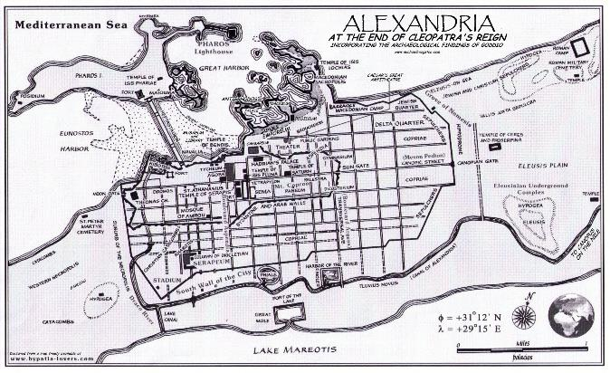
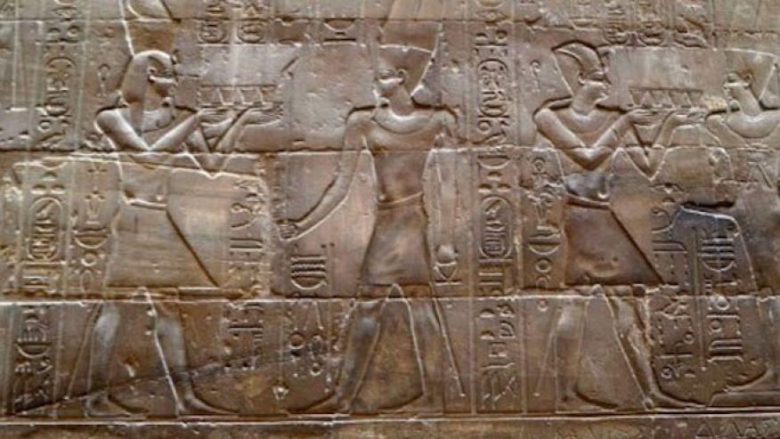
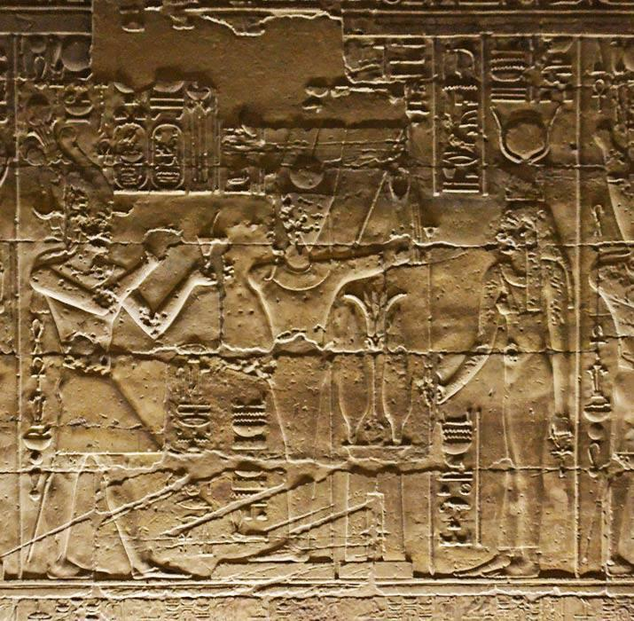
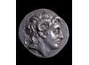

قاموس المرشد السياحي: كلمات ومصطلحات المحاضرة الثالثة
💡 تنبيه للمرشد السياحي: استخرجنا لك أدق المصطلحات التاريخية والجغرافية الواردة في نص المحاضرة الثالثة بكتاب الدكتورة مرفت ماهر أمين؛ احفظها جيداً لاختبارات الكلية والشرح الميداني للسائحين:
المعنى بالعربي: الإبعاد القسري خارج الوطن. فور توليه العرش، استدعى الإسكندر أصدقاءه المقربين من المنفى وعينهم في الإدارة الجديدة.
المعنى بالعربي: الممر الأرضي الضيق الذي يربط بر اليونان بشبه جزيرة البيلوبونيز؛ وفيه عقد الإسكندر مؤتمره الشهير عام 336 ق.م.
المعنى بالعربي: الأقاويل غير الصحيحة؛ شائعة مقتل الإسكندر هي التي أشعلت ثورة مدينة طيبة ضده، فزحف 300 ميل في أسبوعين وسحقها.
المعنى بالعربي: مدينة بلوزيوم الأثرية (تل الفرما شرق بورسعيد حالياً)؛ البوابة الشرقية لمصر التي دخل منها الإسكندر عام 332 ق.م.
المعنى بالعربي: نبوءات الكهنة وأقوال الآلهة؛ قصد الإسكندر معبد الوحي بسيوة للتأكد من بنوته للإله آمون (Amon).
المعنى بالعربي: قرية صيادين مصرية قديمة كانت قائمة في الموقع الذي بنى عليه الإسكندر مدينته، وصارت لاحقاً الحي الوطني للمصريين.
المعنى بالعربي: المهندس المعماري الرودسي العبقري ورئيس مهندسي الإسكندر، وهو الذي وضع المخطط الشطرنجي الهيبودامي للإسكندرية.
المعنى بالعربي: سد وجسر بحري شُيد لربط جزيرة فاروس بالبر الرئيسي لمدينة الإسكندرية بطول 7 غلوات (هيبتاستاديون)، فقسم البحر لميناءين.
المعنى بالعربي: الميناء الشرقي الكبير؛ كان يطل عليه الحي الملكي وقصور البطالمة ومكتبة الإسكندرية القديمة.
المعنى بالعربي: الميناء الغربي للإسكندرية؛ ومعنى اسمه باليونانية "العودة الآمنة الحميدة"، وهو الميناء التجاري الرئيسي اليوم.
المعنى بالعربي: الحي الملكي الفخم الذي شغل ثلث مساحة الإسكندرية، وضم القصور الملكية والمسارح والمقبرة الملكية والمتحف والمكتبة.
المعنى بالعربي: المرض الوبائي (الملاريا) الذي أصاب الإسكندر في مستنقعات بابل بالعراق وتسبب في وفاته في يونيو 323 ق.م.
اعتلاء العرش، إخضاع اليونان، وسحق الفرس في إيسوس والجرانيكوس
• وُلد الإسكندر الأكبر في صيف عام 356 ق.م؛ والده فيليب الثاني وأمه أوليمبياس (أميرة إبيروس). تولى عرش مقدونيا في سن العشرين عام 336 ق.م.
• طمأن الشعب المقدوني باستمرار سياسة أبيه، وأعفى المواطنين من الضرائب المباشرة وجعل واجبهم الوحيد هو الخدمة العسكرية، واستدعى أصدقاءه المقربين من المنفى (exile) وعينهم في الإدارة.
• في عام 336 ق.م زحف جنوباً إلى برزخ كورنثة (Isthmus of Corinth)، فاستجابت كل مدن اليونان ما عدا إسبرطة (Sparta) وانتخبوه قائداً أعلى للحرب ضد الفرس.
• حين انتشرت شائعات مقتله (rumors)، ثارت مدينة طيبة بزعامة متمردين؛ قطع الإسكندر 300 ميل في أسبوعين فقط، وحاصر المدينة ودمرها بالكامل ما عدا معبد أبوللو، وباع الناجين كعبيد!
• انطلق شرقاً لمواجهة الفرس: هزم حكام الأقاليم الفرس عند نهر جرانيكوس (Granicus) بآسيا الصغرى عام 334 ق.م، ثم هزم الملك الفارسي (داريوس الثالث) شخصياً في معركة إيسوس (Issus) عام 333 ق.م. بحلول 332 ق.م اختفى الوجود الفارسي من سواحل شرق المتوسط ما عدا مصر.
"Alexander the great was born in the summer of 356 BC, his mother Olympias (princess of Epirus), and his father is Phillip II. Alexander became the king of Macedonia at the age of twenty in the year 336 BC.
Alexander addressed the Macedonian people, and he assured that he would follow the same policy of his father, announced the citizens were exempt from direct taxation and their only duty was military service, summoned all his close friends from exile المنفى and appointed them in the new administration.
In 336 BC, Alexander marched south to Isthmus of Corinth... all except Sparta answered his summons and agree to his wish to be elected commander in his father's place.
Some rumors الشائعات of the death of Alexander reached Greece... Alexander marched 300 miles in two weeks only until he reached Thebes, attacked the city immediately and destroyed all the city except the temple of Apollo, and all the surviving Thebans were sold into slavery.
In 334 BC, he defeated an army gathered by the Persian Satraps on the river Granicus in Asia Minor and an army commanded by the king himself at Issus on the Syrian coast. In 332 BC, the Persian power disappeared from the coast lands of eastern Mediterranean except from Egypt."
عندما اغتيل فيليب، ظن قادة اليونان في أثينا وطيبة أن العرش ذهب إلى "مجرد فتى غر" في العشرين من عمره، فأطلقوا النكات وقالوا إن الصبي لن يصمد أسبوعاً واحداً! وحين انتشرت إشاعة خاطئة بأنه قُتل في الشمال، هللت مدينة طيبة وأعلنت الثورة. لكن الإسكندر فاجأهم بسرعة تحرك خيالية قطعت 300 ميل من الجبال الوعرة في 14 يوماً فقط! وقف أمام أسوار طيبة ودمّرها تدميراً كاملاً ليعطي درساً مرعباً لكل بلاد اليونان، لكن احترامه للفن جعله يصدر أمراً صارماً: "لا تلمسوا منزل الشاعر بندار، ولا تهدموا معبد الإله أبوللو". وبعد أن أمّن ظهره في اليونان، التفت نحو الشرق ليبتلع إمبراطورية الفرس الشاسعة في معركتين حاسمتين جعلتا الطريق إلى مصر مفتوحاً على مصراعيه.
دخول مصر 332 ق.م، التتويج في منف، ورحلة واحة سيوة الأسطورية
• في خريف عام 332 ق.م، قرر الإسكندر الأكبر غزو مصر على رأس جيش يبلغ قوامه نحو 40,000 مقاتل.
• استقبال المصريين الحافل: رحب الشعب المصري بقدوم الإسكندر ترحيب المحررين، معتقدين أنه جاء لإنقاذهم من نير الاحتلال الفارسي البغيض؛ ولم تكن الحامية الفارسية قوية بما يكفي لمواجهته، فانهار الحكم الفارسي في مصر دون قتال.
• سار الإسكندر من بلوزيوم (Plusium / تل الفرما) إلى هليوبوليس ثم إلى منف (Memphis) العاصمة القديمة حيث تُوِّج فرعوناً رسمياً على مصر وفق الطقوس الملكية المصرية الخالصة.
• أظهر الإسكندر احتراماً وتبجيلاً فائقاً لآلهة مصر وعقائدها، ليقدم نفسه كوريث شرعي للملوك والفراعنة الوطنيين.
• رحلة واحة سيوة: قرر الإسكندر زيارة معبد آمون في واحة سيوة لاستشارة كهنة الوحي والتأكد من نبوءات الإله آمون (oracles of god Amon)، وهناك رحب به كبير الكهنة وناداه بلقب «يا ابن آمون»، مما أضفى عليه الصبغة الإلهية التي يحتاجها لحكم الشرق ومصر.
"In 332 BC, Alexander the great decided to invade Egypt on the head of an army numbering about 40,000 men. The Egyptians welcomed his arrival, believing that he came to help them against the Persians. The Persians garrison was not strong enough to oppose the army of Alexander, therefore, the Persian rule in Egypt collapsed without fighting.
Alexander marched from Pelusium بلوزيوم to Heliopolis then to Memphis where he was crowned as pharaoh of Egypt. Alexander showed a great honor and respect to the gods of Egypt, and to represent himself as the successor of the native kings.
Alexander decided to visit the temple of Amun in Siwa to consult or ensure the oracles of god Amon."
كان الفرس قد ارتكبوا جرائم لا تُنسى في حق المصريين؛ أهانوا الديانة المصرية، وذبح ملكهم قمبيز العجل المقدس آبيس ونهبوا المعابد، لذلك كان كره المصريين للفرس يفوق الوصف. وحين دخل الإسكندر مصر، تصرف بذكاء سياسي نادر تعلمه من أرسطو؛ لم يأتِ كغازٍ متغطرس، بل ذهب إلى منف وسجد للآلهة المصرية وقدم القرابين للعجل آبيس نفسه! ثم خاض رحلة محفوفة بالمخاطر عبر الصحراء الغربية القاحلة حتى وصل واحة سيوة. وتقول كتب التاريخ إن عاصفة رملية كادت تهلك الجيش لكن طيوراً وغرباناً هدتهم للطريق! وعندما دخل قدس أقداس معبد آمون، خاطبه الكاهن بلقب «ابن آمون»، وهي اللحظة التاريخية الفارقة التي جعلت المصريين يتقبلون حكمه كفرعون ابن إله وليس كمحتل أجنبي.
تأسيس الإسكندرية: الموقع، الموانئ، الجسر، والأحياء الخمسة

الحدود الجغرافية العبقرية لموقع الإسكندرية
هذا الموقع الحصين جعلها محاطة بالمياه من الشمال والجنوب، وشرياناً تجارياً يربط وادي النيل بالعالم الإغريقي والمتوسطي.
الموانئ وجسر الهيبتاستاديون
• في مواجهة الشاطئ، كانت توجد جزيرة فاروس (Pharos).
• تم بناء جسر مائي عظيم (dyke جسر) يربط الجزيرة بالبر الرئيسي للمدينة.
• نتج عن بناء هذا الجسر تشكّل ميناءين عظيمين:
أحياء الإسكندرية الخمسة والطبقات
قُسمت الإسكندرية إلى خمسة أحياء رئيسية سُميت بالحروف الخمسة الأولى للأبجدية اليونانية: α (Alpha), B (Beta), Γ (Gamma), Δ (Delta), ε (Epsilon).
• في طريقه إلى واحة سيوة، لاحظ الإسكندر الموقع الاستراتيجي الفذ لقرية صيادين تُدعى راقودة (Rhacotis)، فأمر كبير مهندسيه دينوقراطيس (Dinocrates) بتخطيط وبناء مدينة جديدة تحمل اسمه: الإسكندرية (Alexandria).
• ترجع أهمية الموقع إلى حدوده الطبيعية: البحر شمالاً، وبحيرة مريوط جنوباً، والفرع الكانوبي شرقاً، والصحراء غرباً؛ مما جعلها مركزاً تجارياً حيوياً بين مصر واليونان.
• في مواجهة البر كانت هناك جزيرة فاروس (Pharos)، وشُيّد جسر (dyke جسر) يربطها بالبر، فنتج عن ذلك ميناءان: الميناء الشرقي (Port Magnus) والميناء الغربي (Port Eunostos).
• قُسمت الإسكندرية إلى خمسة أحياء بأسماء الحروف اليونانية الخمسة الأولى (α، B، Γ، Δ، ε). وعُرف أن حي دلتا سكنه اليهود، بينما راقودة في الغرب كانت حي المصريين الذين شكلوا الطبقات الدنيا بمجتمع الإسكندرية.
• شغل الحي الملكي (The Brucheum الحي الملكي) ثلث المدينة (1/3) ويضم القصور الملكية والمباني العامة والمقبرة الملكية، ويطل مباشرة على الميناء الشرقي.
"On his way to Siwa Oasis, he noticed a very strategic location of fishermen village of Rhacotis, so that he ordered his chief architect Dinocrates to plan and build a new city and to name this city on his name Alexandria.
The importance of this site was due to the fact that the city was bordered on the north by Mediterranean sea, on south by lake Mariots, to east by canopic branch of Nile, and to west by Western desert.
Opposite the main land of Alexandria, there was an island called 'Pharos', and there is a dyke جسر was built to connect the island with Alexandria, as a result two Ports were formed: Port Magnus (Eastern Port), and Port Eunostos (Western Port).
Alexandria was divided into five main districts أحياء named after first five letters of Greek alphabet: α alpha, B Bita, Γ Gamma, Δ Delta, ε Epsilon.
Delta district was inhabited by the Jews اليهود, Rhakotis was the Egyptian quarter situated in west of Alexandria... The Bruchium (royal quarter) occupied one third of the city, it comprises royal palaces, governmental buildings and royal cemetery, overlooked on the eastern port."
كان الإسكندر يحلم بمدينة لا تشبه أي مدينة أخرى؛ ميناء يربط بين الشرق الأسطوري وحضارة اليونان. حين وقف عند شاطئ قرية راقودة الصغيرة، وجد شريطاً أرضياً رائعاً يفصل بين مياه البحر الصافية ومياه بحيرة مريوط العذبة. لم يكن معه طباشير لتخطيط الشوارع، فأمر جنوده بإحضار أكياس من دقيق القمح والشعير، ورسم بنفسه خطوط شوارع المدينة العريضة على الرمال! وفجأة هبطت أسراب ضخمة من الطيور من البحر وأكلت كل حبوب الدقيق؛ فخاف الجنود واعتبروها شؤماً، لكن كاهن الإسكندر ابتسم وقال له: «هذه أعظم بشارة يا مولاي؛ مدينتك ستكون مصدر الغذاء والعلم الذي ستطير إليه شعوب الأرض كافة!» وهكذا ولدت الإسكندرية كأعظم حاضرة للعلم والفكر في التاريخ.
وفاة الإسكندر في بابل (323 ق.م) ومؤتمر تقسيم الإمبراطورية
• في عام 331 ق.م، بعد شهرين فقط من عودته من سيوة، غادر الإسكندر مصر لمهاجمة الملك الفارسي في بلاد الرافدين، وواصل فتوحاته (composts فتوحاته) حتى وصل إلى حدود الهند.
• شعر جنوده بالإرهاق الشديد وتملكهم القلق لشعورهم بالابتعاد الطويل عن البحر، فعاد الإسكندر بجيشه إلى بابل (Babylon) بالعراق.
• وفاة الإسكندر: توفي الإسكندر بحمى المستنقعات (swamp fever) في يونيو 323 ق.م في سن 32 عاماً فقط، تاركاً زوجته الفارسية روكسانا (Roxana) حاملاً.
• مؤتمر بابل وقرارات القادة السبعة:
١. تقسيم الإمبراطورية بين قادته السبعة العظام كولاة (satraps perfect).
٢. تقاسم العرش بين أخيه غير السوي المصاب بالصرع (فيليب أرهيدايوس) والطفل القادم لروكسانا (الإسكندر الرابع)، تحت وصاية القائد الأكبر بيرديكاس (Perdiccas).
٣. تحديد عاصمة الإمبراطورية لتكون بيلا (Pella) في مقدونيا.
٤. دفن الإسكندر في بيلا وليس في واحة سيوة (رغم أن وصية الإسكندر كانت أن يُدفن في سيوة بجوار أبيه آمون!)، لأن مكان دفنه سيمنح المدينة أهمية كبرى.
٥. إعطاء مصر إلى بطليموس ليحكمها كوالٍ (satrap والي)، ليبدأ عصر البطالمة في مصر!
"In 331 BC, not more than a month or two after his return from Siwa, Alexander left Egypt to attack the Persian king in Mesopotamia... continued till he reached India Borders... troops were getting nervous... Alexander marched back to Babylon where he died of swamp fever in June 323 BC leaving his Persian wife Roxana pregnant.
After the death of Alexander the Great, the army leader held a conference in Babylonia to decide the fate of empire:
▪ Decided empire should be divided among his great seven generals to rule as satraps perfect.
▪ Both young kings (epileptic half-brother Phillip Arrhidaeus and baby boy Alexander IV) placed under regency of Perdiccas.
▪ The capital of the empire should be Pella.
▪ Decided Alexander should be buried in Pella and not in Siwa Oasis according to his will, because the place will take an importance.
▪ Egypt was given to Ptolemy to rule it as satrap والى."
حين كان الإسكندر يحتضر على فراش الموت في بابل، تحلق حوله قادته الكبار وسألوه بلهفة: «لمن تترك إمبراطوريتك العظيمة يا ملك الملوك؟» فهمس بكلمته الأخيرة الخالدة: «للأقوى (To the strongest)!» وفور أن لفظ أنفاسه، انقض قادته السبعة كالنسور على ممتلكات الإمبراطورية. وكان أذكاهم جميعاً هو صديق طفولته وحارسه الشخصي «بطليموس بن لاجوس»؛ بينما كان القادة يتقاتلون على الأراضي الشاسعة في آسيا ومقدونيا، وضع بطليموس عينه على جائزة واحدة فقط: «مصر» بنيلها الخصيب وموقعها الحصين وبحرها وثرواتها. وفوق ذلك، في المحاضرة القادمة سنرى كيف خطف بطليموس جثمان الإسكندر نفسه أثناء نقله إلى مقدونيا وأتى به إلى مصر ليدفنه في الإسكندرية، ليمنح مملكته الجديدة قدسية وشرعية لا تُنازع!
شواهد الآثار والنقوش الأصلية للإسكندر الأكبر في مصر

مقصورة الإسكندر في معبد الأقصر
منظر جداري يُصور الإسكندر الأكبر بملابس الفرعون المصري القديم يقدم القرابين المقدسة أمام الإله آمون رع في قدس أقداس معبد الأقصر.

المحراب الداخلي لآمون رع في طيبة
نقش غائر يوضح تجسيد الإسكندر الأكبر كحاكم مصري شرعي يتعبد للإله آمون رع وإيزيس في المقاصير الملكية بطيبة (الأقصر).

عملة الإسكندر بقرني كبش آمون
عملة فضية ونقدية سُكّت للإسكندر يظهر فيها برأسه مزيناً بقرني الكبش (رمز الإله آمون)، وهي العملة التي رسخت لقبه التاريخي «ذو القرنين».
بنك الأسئلة التفاعلي: اختبر فهمك للمحاضرة الثالثة
المحاضرة الرابعة: الملك بطليموس الأول سوتر (Ptolemy I Soter)
تأسيس السلالة البطلمية في مصر، تصفية كليومينس، الصراع الملحمي مع بيرديكاس، عبادة الإله سيرابيس، تأسيس مكتبة ومتحف الإسكندرية، والإصلاح المالي الشامل.